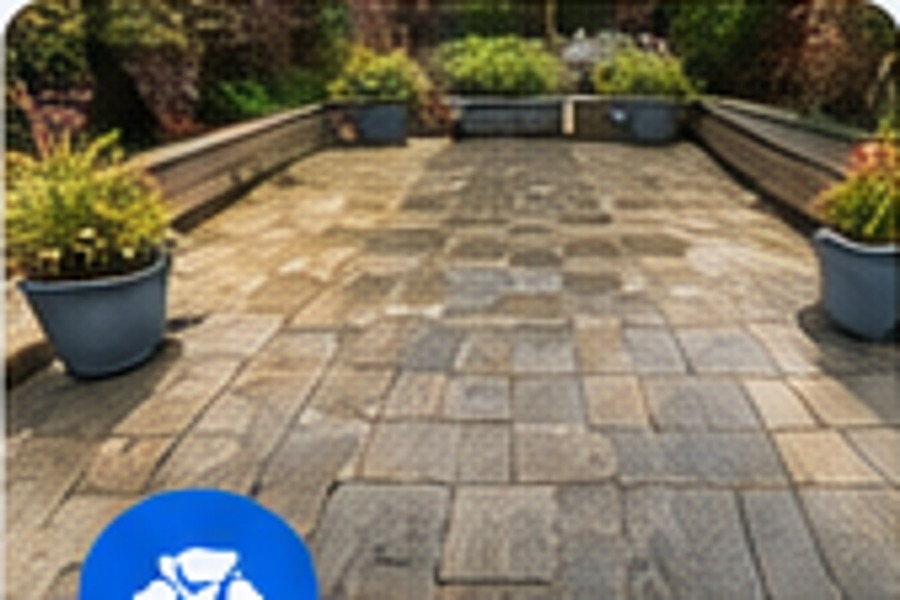
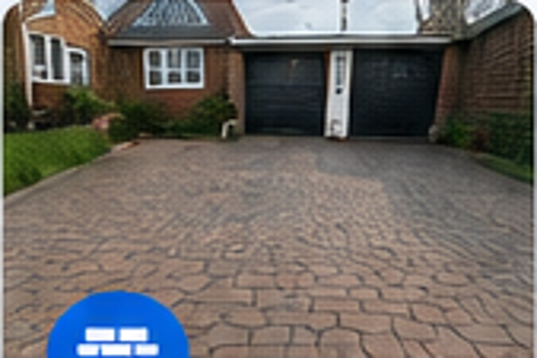
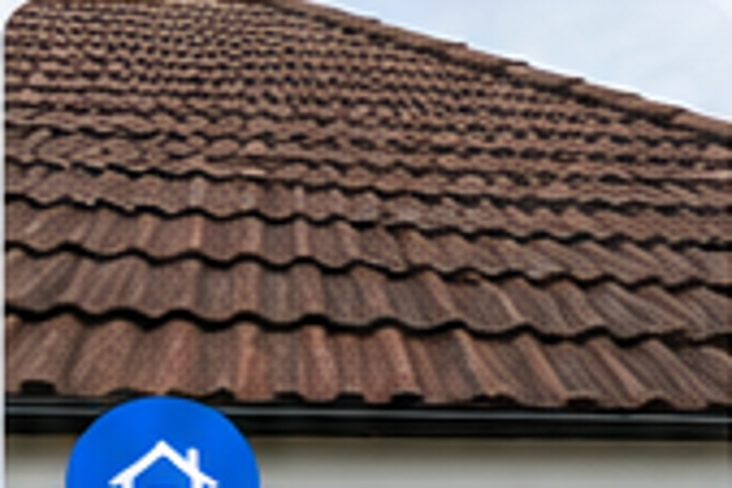
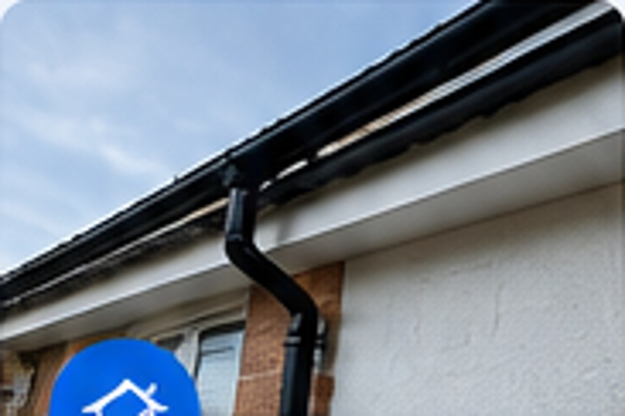
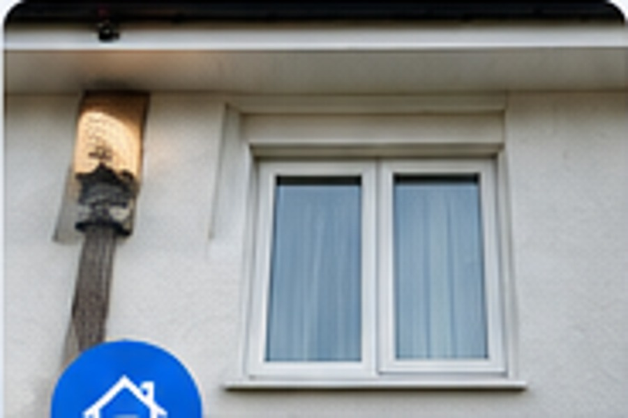
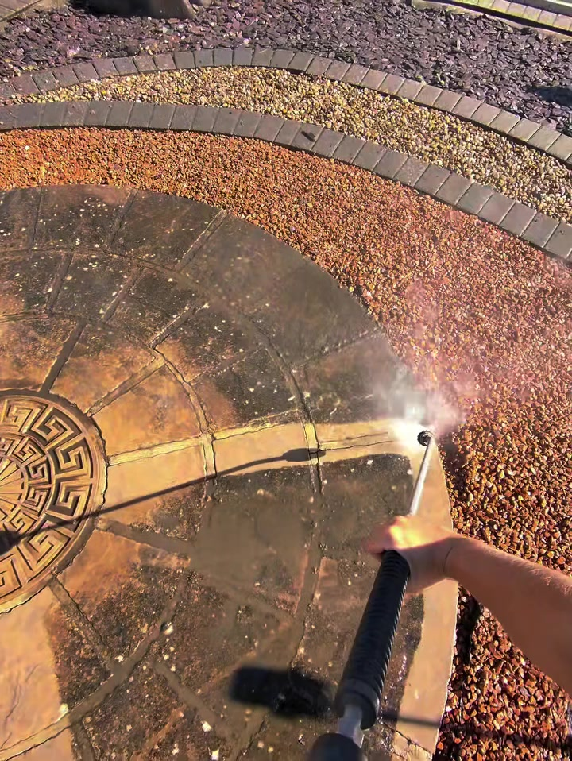
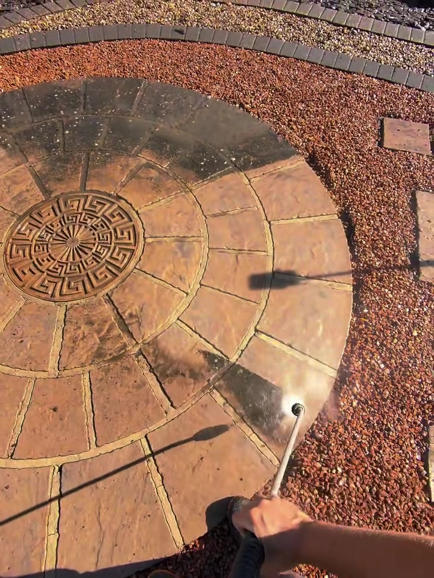
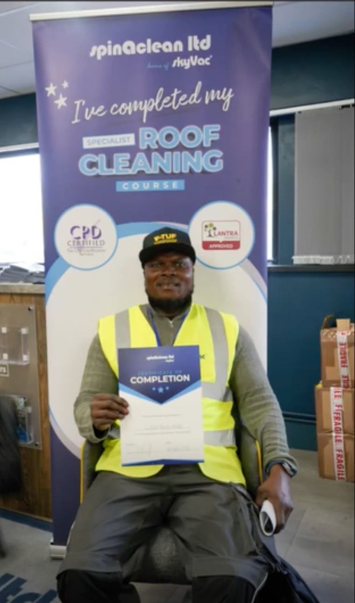

01
Patio Cleaning
Deep cleaning for patios and paving to remove built-up grime, algae and staining.
Patios, driveways, roofs, gutters and exterior surfaces cleaned properly with professional equipment and careful attention to detail.
Exterior surfaces collect dirt, algae, moss and weather staining over time. GID Exterior Cleaning Services provides a practical, professional clean that lifts the appearance of your home and helps outdoor areas feel cared for again.
From one-off patio cleans to roof and gutter maintenance, each job is approached with the right equipment and method for the surface.

Deep cleaning for patios and paving to remove built-up grime, algae and staining.

02Pressure cleaning for block paving, concrete and other hard driveway surfaces.

03Specialist roof cleaning designed to remove moss and organic build-up carefully.

04Clear gutters and downpipes so rainwater can flow properly again.

05Targeted cleaning for walls, exterior surfaces and problem areas around the property.
The hero footage is from an actual patio clean. These stills show the same process removing years of surface dirt and bringing the paving back.


Proper exterior cleaning is one of the quickest ways to sharpen the look of a property without replacing the surface underneath.
Send photos for a quote →
GID Exterior Cleaning Services has completed specialist roof-cleaning training, adding formal knowledge to the practical care used on every job.
Send a few photos on WhatsApp or call to discuss the job. GID serves Reading and nearby areas.